|
I am a 4th-year Ph.D. student working with Prof. Yan Yan in Computer Science at the University of Illinois Chicago.
I will graduate in May 2027.
Email / CV / Google Scholar / Linkedin / Github / Twitter / Hi~ I am actively seeking full-time Research Scientist positions starting in 2027. Feel free to reach out if there is a good fit. |
{kind=link}
|
|

|
Research on Video Understanding. May 2026 - Aug. 2026, Los Gatos, California, United States · On-site |

|
Research on Visual Grounding and Image Editing. May 2025 - Aug. 2025, San Jose, California, United States · On-site Aug 2025 - May 2026, Chicago, Illinois, United States · Remote |
|
Research on 2D Large Multimodal Model. Oct. 2024 - Dec. 2024, Chicago, Illinois, United States · Remote |
|

|
Work on Human Pose Detection. Oct. 2021 - Jul. 2022, Shenzhen, Guangdong, China · On-site |
|
Research on Video Super-Resolution. Jul. 2021 - Sep. 2021, Shenzhen, Guangdong, China · On-site |
|
|
| 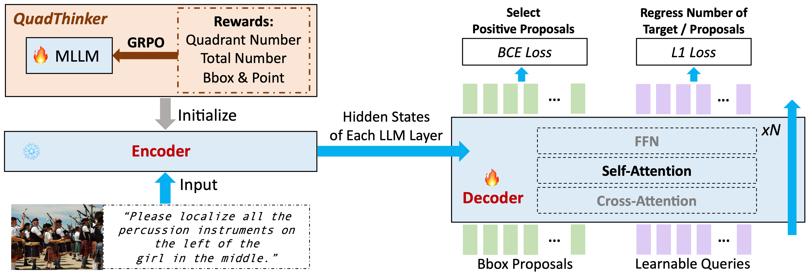 |
VGent: Visual Grounding via Modular Design for Disentangling Reasoning and Prediction
Weitai Kang, Jason Kuen, Mengwei Ren, Zijun Wei, Yan Yan, Kangning Liu CVPR 2026. PDF |
| 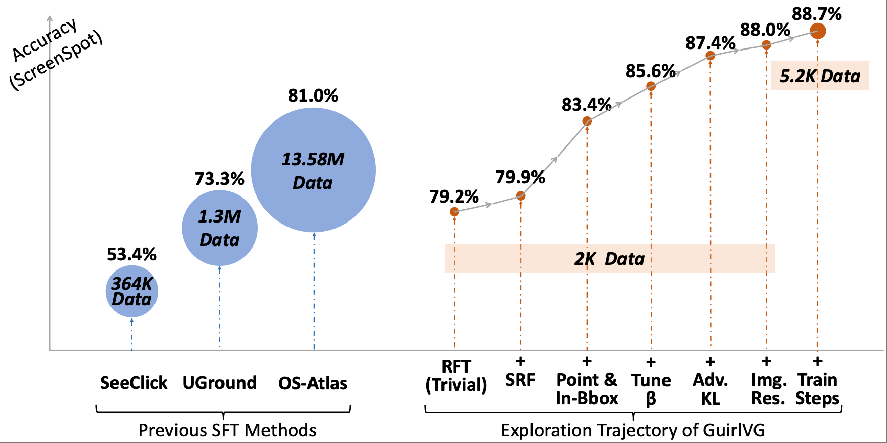 |
GuirlVG: Incentivize GUI Visual Grounding via Empirical Exploration on Reinforcement Learning
Weitai Kang, Bin Lei, Gaowen Liu, Caiwen Ding, Yan Yan ICLR 2026. PDF |
| 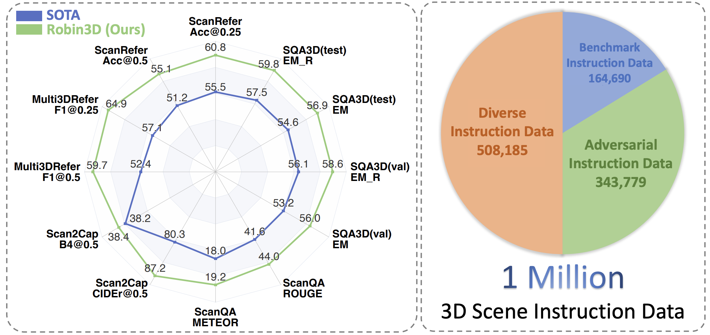 |
Robin3D: Improving 3D Large Language Model via Robust Instruction Tuning
Weitai Kang, Haifeng Huang, Yuzhang Shang, Mubarak Shah, Yan Yan ICCV 2025. PDF / Code |
| 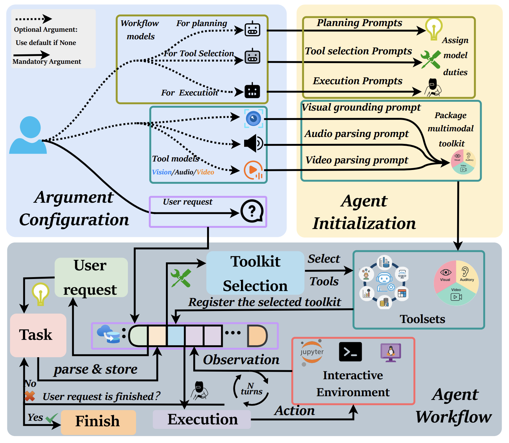 |
InfantAgent-Next: A Multimodal Generalist Agent for Automated Computer Interaction
Bin Lei*, Weitai Kang*, Zijian Zhang, Winson Chen, Xi Xie, Shan Zuo, Mimi Xie, Ali Payani, Mingyi Hong, Yan Yan, Caiwen Ding NeurIPS 2025. * Equal contribution. PDF / Code |
| 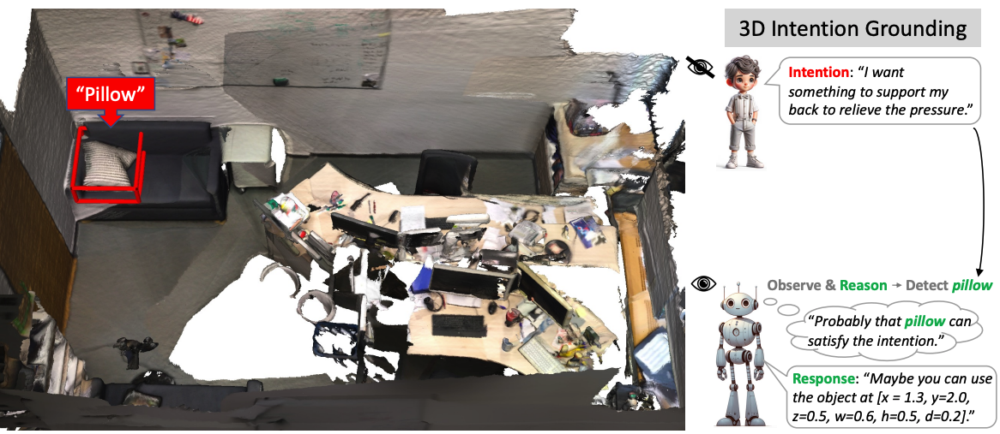 |
Intent3D: 3D Object Detection in RGB-D Scans Based on Human Intention
Weitai Kang, Mengxue Qu, Jyoti Kini, Yunchao Wei, Mubarak Shah, Yan Yan ICLR 2025. Project Page / PDF / Code |
| 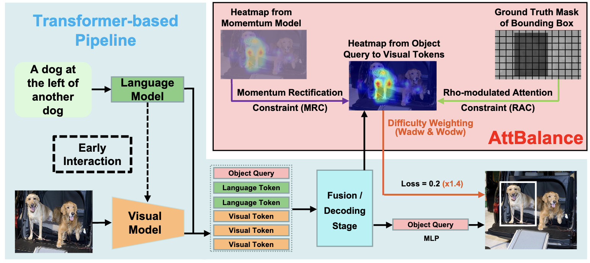 |
AttBalance: Visual Grounding with Attention-Driven Constraint Balancing
Weitai Kang, Luowei Zhou, Junyi Wu, Changchang Sun, Yan Yan ACM MM 2025. PDF |
| 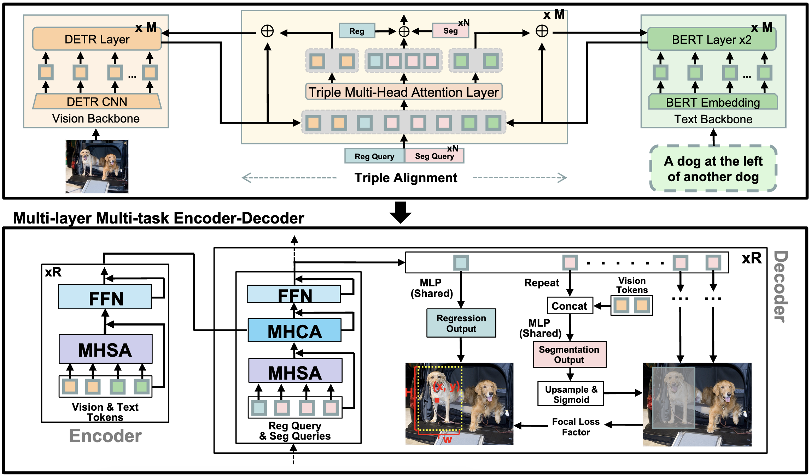 |
SegVG: Transferring Object Bounding Box to Segmentation for Visual Grounding
Weitai Kang, Gaowen Liu, Mubarak Shah, Yan Yan ECCV 2024. PDF / Code |
| 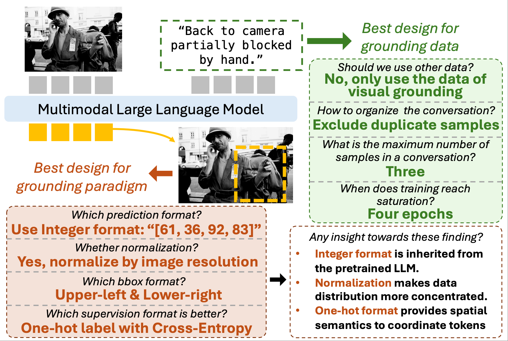 |
ExpVG: Investigating the Design Space of Visual Grounding in Multimodal Large Language Model
Weitai Kang, Weiming Zhuang, Zhizhong Li, Yan Yan, Lingjuan Lyu |
| 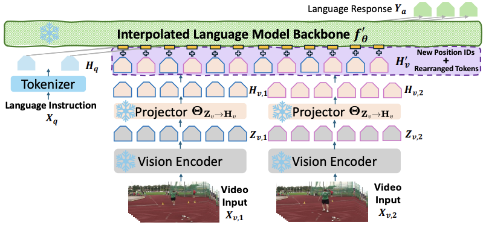 |
Interpolating Video-LLMs: Toward Longer-sequence LMMs in a Training-free Manner
Yuzhang Shang, Bingxin Xu, Weitai Kang, Mu Cai, Yuheng Li, Zehao Wen, Zhen Dong, Kurt Keutzer, Yong Jae Lee, Yan Yan |
| 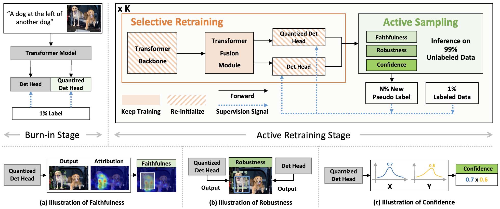 |
ACTRESS: Active Retraining for Semi-supervised Visual Grounding
Weitai Kang, Mengxue Qu, Yunchao Wei, Yan Yan |
| 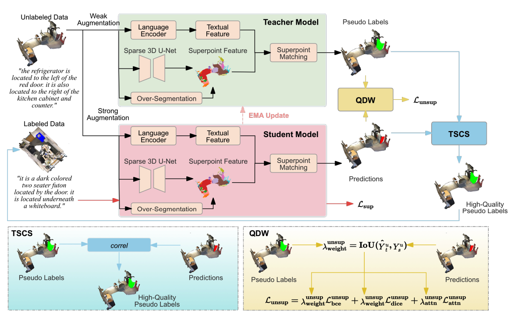 |
3DResT: A Strong Baseline for Semi-Supervised 3D Referring Expression Segmentation
Wenxin Chen, Mengxue Qu, Weitai Kang, Yan Yan, Yao Zhao, Yunchao Wei TMM 2025. PDF |
| 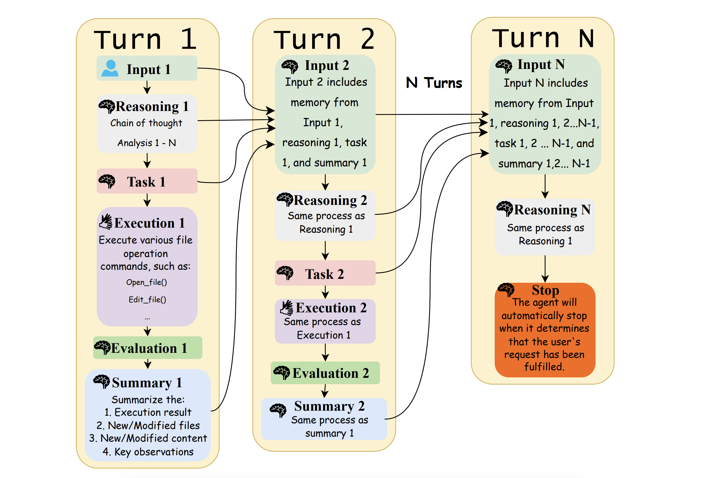 |
Infant Agent: A Tool-Integrated, Logic-Driven Agent with Cost-Effective API Usage
Bin Lei, Yuchen Li, Yiming Zeng, Tao Ren, Yi Luo, Tianyu Shi, Zitian Gao, Zeyu Hu, Weitai Kang, Qiuwu Chen |
| 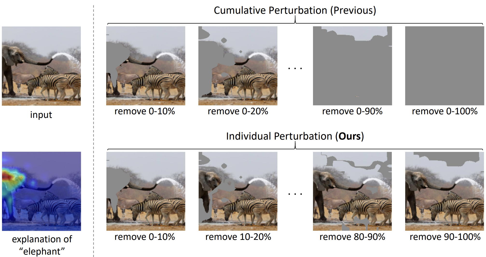 |
On the Faithfulness of Vision Transformer Explanations
Junyi Wu, Weitai Kang, Hao Tang, Yuan Hong, Yan Yan CVPR 2024. PDF |
| 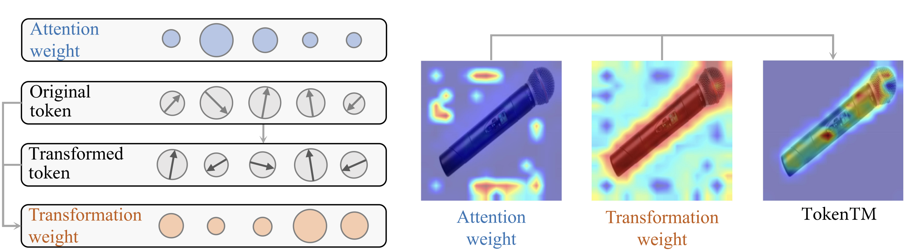 |
Token Transformation Matters: Towards Faithful Post-hoc Explanation for Vision Transformer
Junyi Wu, Bin Duan, Weitai Kang, Hao Tang, Yan Yan CVPR 2024. PDF |
|
|
You can also reach me through WeChat: Victor_Hong_ |